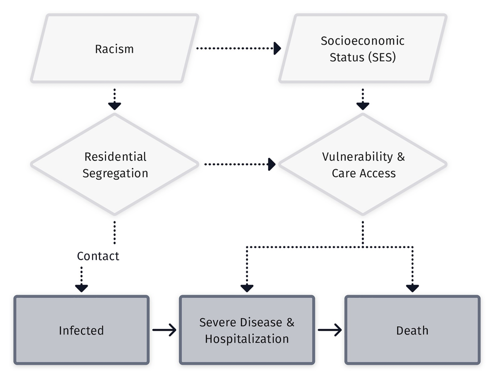
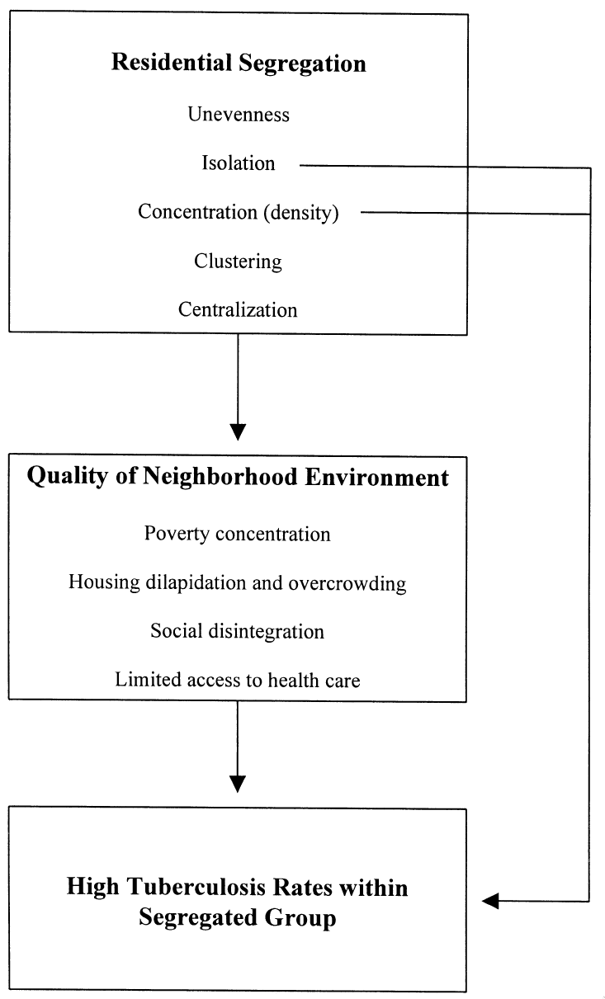

What does residential segregation do in the generation of infection inequalities?
EPID 684
Spatial Epidemiology
3/15/2022
Jon Zelner
jzelner@umich.edu
epibayes.io
Today’s Theme
What are the mechanistic linkages between residential segregation and infection outcomes?
Agenda
- Brief overview of infectious disease transmission models
- Hands-on with mechanisms discussed in Acevedo-Garcia paper.
- Discussion of the cyclical nature of residential segregation and disease.
What does it mean to model infectious disease transmission?
- Represent change over time in disease outcomes.
- Explore possible futures if key parameters such as \(R_0\) are changed.
- \(R_0\) = the average number of new infections generated by a single case in a fully susceptible population.
- In general, \(R_0 > 1 \to\) outbreak/epidemic.
What goes into a parameter like \(R_0\)?
 Figure from Zelner et al. 2022
How do measures like dissimilarity and isolation reflect transmission risks?

Hands-on with a mechanistic version of this model
Taking the long view on segregation and infection
- What examples of infection reinforcing segregation do Finn and Kobayashi draw on?
- To what extent have the concerns they raise about pandemic restrictions as a tool of authoritarianism and apartheid come to pass? Globally? Domestically?
- What role can spatial epidemiologists play in preventing this cycle from persisting?
Next Time
Extending the idea of spatially clustered susceptibility and vulnerability to vaccination.